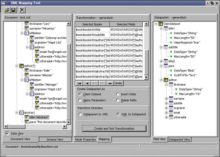

Мария Сысойкина
До выхода в свет пакетов Delphi 6 и Kylix 2 предложенные компанией Borland средства работы с XML были несколько ограниченными. Технология XML использовалась как основа для хранения записей клиентских наборов данных в локальных файлах. Предложенная Borland специфическая структура таких XML-файлов была строго определена. Однако в последних версиях Delphi и Kylix возможности работы с XML-данными значительно расширились.
В этой статье речь пойдет об использовании XML в рамках технологии MyBase и о новом решении Borland, позволяющем работать с XML-файлами любой структуры, в том числе отличной от структуры обычных клиентских наборов данных. MyBase - это новая однопользовательская СУБД, предназначенная для работы с локальными данными в формате XML или с двоичными файлами внутреннего формата CDS. Сама идея такой СУБД возникла в связи с созданием кросс-платформенных сред разработки - Kylix и Delphi 6.
BDE - наиболее популярный механизм работы с локальными СУБД, реализованный в Delphi, - по понятным причинам не мог быть перенесен на Linux, поэтому альтернативой ему стала именно технология MyBase.
Технология MyBase
Использование MyBase, в частности, хранение данных в формате XML, имеет смысл в нескольких ситуациях. XML-файлы - это практически единственное средство создания локальных однопользовательских БД, прежде всего при переносе Windows-приложений БД, работающих с данными в форматах Paradox или dBase, в среду Linux. Допустим, вы хотите перенести под Linux небольшую БД, состоящую из нескольких таблиц. Если вы предполагаете в дальнейшем развивать эту БД, реализовывать многопользовательский доступ к таблицам или всерьез заниматься безопасностью данных, вам придется развернуть серверную СУБД, например, Interbase, и конвертировать данные в формат выбранной СУБД. Если же у вас нет столь грандиозных планов в отношении БД, то установка сервера БД и его дальнейшее администрирование станут просто лишними. Оптимальным решением будет перевод данных в XML-файлы или бинарные файлы CDS, которыми затем можно будет управлять с помощью MyBase.
Кроме того, функции MyBase - это необходимый элемент приложений, осуществляющих "портативную" обработку данных на основе так называемой модели "портфеля" (briefcase model). С точки зрения архитектуры приложения модель портативной обработки представляет собой комбинацию трехзвенной и однозвенной модели приложений.
Взаимодействующая с БД система, основанная на модели портативной обработки данных, выглядит как обыкновенное трехзвенное приложение: пользователь запускает клиентский модуль на своем компьютере и соединяется по сети с сервером приложений на удаленном компьютере. Клиент запрашивает данные из БД и отправляет сделанные изменения в БД через сервер приложений. При этом вполне возможно, что БД одновременно используется несколькими клиентами. Однако пользователь может работать с полученными данными, уже отсоединившись от сервера приложений, на своем персональном компьютере. Для этого клиентское приложение пользователя должно выполнять функции приложения однозвенной архитектуры, работающего с локально хранящимися данными.
Предположим, что в серверной БД некоей торговой компании содержится информация о заказчиках, которую торговые представители компании могут использовать и изменять на местах. В этом случае было бы желательно, чтобы у торговых представителей была возможность закачивать некоторый объем данных из основной БД компании и затем работать с выбранными записями на своем компьютере. При этом полученные записи сохраняются в локальных XML-файлах. В дальнейшем пользователь может открывать и закрывать эти файлы, считывая и изменяя хранимые в них данные. Очевидно, что сделанные изменения должны быть внесены в основную БД с тем, чтобы быть доступными остальным работающим с ней сотрудникам. Все модификации локальных данных сохраняются с использованием "журнала изменений" - механизма, позволяющего в дальнейшем избежать ошибок при внесении изменений в БД. При последующем соединении с сервером приложений и с главной базой данных пользователь должен выполнить операцию сохранения внесенных изменений в БД. Такая возможность оффлайновой работы с данными и последующего сохранения обновлений и составляет сущность модели портативной обработки данных.
Реализация этой модели приложений основана на использовании всего одного компонента - TClientDataSet, а также его методов записи и считывания данных из локальных файлов.
Компонент ClientDataSet позволяет работать с наборами данных (НД) - основными элементами приложений БД. С помощью этого компонента можно создавать НД несколькими способами. Во-первых, можно получить данные из уже существующего набора, представляющего собой, например, результат запроса к БД или целую таблицу БД. Во-вторых, можно создать НД "с нуля", явно определив поля и индексы. В обоих случаях можно сохранить созданный НД в файле, используя стандартный метод SaveToFile компонента. И создавать такие НД, и сохранять их в файле можно как на этапе проектирования приложения, так и на этапе его выполнения (run-time).
Казалось бы, такой способ хранения данных в локальных файлах должен сильно ограничивать функциональность приложений или затруднять их разработку, однако это не так. В арсенале MyBase, полнофункциональной локальной СУБД, имеются следующие функции и возможности:
- реализация отношений master/detail между наборами данных;
- сортировка данных (без создания дополнительных файлов индексов);
- ведение журнала изменений и, следовательно, возможность отката;
- создание агрегатов на основе данных таблицы;
- использование одних и тех же данных несколькими наборами данных;
- совместимость с Delphi 5.
Формат XML-файла
Остановимся немного подробнее на формате создаваемого XML-файла. В первой строке файла содержится заголовочный тег, обязательный для файлов XML-формата. Выглядит он так:
<?xml version="1.0" standalone="yes"?>
Затем следует основной раздел файла, содержащий все данные - и метаданные, описывающие структуру таблицы, и сами записи. Этот раздел находится в рамках одного тега высшего уровня
<DATAPACKET>
Тег
<DATAPACKET>может включать в себя два вида тегов -
<METADATA>содержащий описание структуры таблицы, и
<ROWDATA>содержащий записи.
Тег
<METADATA>содержит теги
<FIELDS>и
<PARAMS>В первом описывается структура полей таблицы, причем каждое поле с его характеристиками описывается отдельным вложенным тегом
<FIELD>Тег
<PARAMS>не имеет вложенных полей. В нем содержится служебная информация, например, о порядке сортировки, используемом по умолчанию, или стартовом значении счетчика для автоинкрементного поля.
Тег
<ROWDATA>описывающий записи таблицы, содержит вложенные теги
<ROW>описывающие каждую запись в отдельности.
Если мы создаем набор данных с нуля, то пустой XML-файл, не содержащий самих записей, будет выглядеть, например, так:
<?xml version="1.0" standalone="yes"?> <DATAPACKET Version="2.0"> <METADATA> <FIELDS> <FIELD attrname="Id" fieldtype="i4" SUBTYPE="Autoinc"/> <FIELD attrname="Name" fieldtype="string" WIDTH="20"/> <FIELD attrname="Type" fieldtype="string" WIDTH="10"/> <FIELD attrname="Price" fieldtype="r8" SUBTYPE="Money"/> </FIELDS> <PARAMS AUTOINCVALUE="1"/> </METADATA> <ROWDATA></ROWDATA> </DATAPACKET> |
Если вы создаете XML-файл для Linux, вы можете использовать кодировку UTF-8, тогда первая строка файла будет выглядеть так:
<?xml version="1.0" encoding="UTF-8"standalone="yes"?>
Поскольку компоненты клиентских НД позволяют вести журнал изменений, то очевидно, что эти изменения должны каким-то образом сохраняться, особенно при работе с моделью портативной обработки данных. Предположим, мы добавили несколько записей в нашу БД, однако не сохранили изменения. Посмотрим, как изменился файл:
<?xml version="1.0" standalone="yes"?> <DATAPACKET Version="2.0"> <METADATA><FIELDS> <FIELD attrname="ID" fieldtype="i4" readonly="true" SUBTYPE="Autoinc"/> <FIELD attrname="Name" fieldtype="string" WIDTH="20"/> <FIELD attrname="Type" fieldtype="string" WIDTH="20"/> <FIELD attrname="Price" fieldtype="r8" SUBTYPE="Money"/> </FIELDS> <PARAMS CHANGE_LOG="1 0 4 2 0 4 3 0 4" AUTOINCVALUE="4"/> </METADATA> <ROWDATA> <ROW RowState="4" ID="1" Name="Ручка" Type="шариковая" Price="5"/> <ROW RowState="4" ID="2" Name="Карандаш" Type="простой" Price="2"/> <ROW RowState="4" ID="3" Name="Коврик" Type="для мыши" Price="50"/> </ROWDATA></DATAPACKET> |
Мы видим, что данные записаны в тегах ROW. Но поскольку изменения не были внесены, в теге Если же в дальнейшем сделанные изменения будут внесены в БД, то файл примет вид:
Несмотря на все достоинства описанного способа хранения данных, нельзя сказать, что такой формат очень удобен. Применение таких файлов для конвертации данных из одного формата в другой весьма полезно, но как быть с базами данных, изначально реализованными в XML? Ведь структура XML-файлов клиентских НД, изобретенная Borland, жестко ограничена и не совместима ни с какими другими схемами.
Решение проблемы было предложено разработчиками Borland в рамках Delphi 6 и Kylix 2. Последние версии этих продуктов позволяют работать с любыми XML-файлами через клиентские НД путем трансформации этих файлов в уже описанный здесь формат клиентских НД. Это обеспечивается с помощью нескольких новых компонентов, утилиты XML Mapper, а также средств поддержки модели DOM.
Новый механизм предусматривает установку двустороннего соответствия между XML-документом
или XML-схемой и пакетом данных, используемых компонентом TClientDataSet. Такое
соответствие устанавливается утилитой XML Mapper, которая позволяет определять
отображения исходных XML-документов на пакеты данных, используемые клиентскими
НД. Каждое такое отображение описывает соответствие между узлами XML-документа
и полями пакета данных. Используя этот инструмент, можно решать три класса задач:
Существующие XML-документы можно трансформировать в пакеты данных различного назначения. При работе с клиентскими наборами данных применяются так называемые дельта-пакеты, т. е. пакеты данных, в которых хранятся записи из журнала изменений (изменения, предназначенные для внесения в БД). Так вот, XML Mapper позволяет трансформировать XML-документы в дельта-пакеты, предназначенные для вставки в БД записей, соответствующих элементам XML-документа, для удаления из БД указанных записей. Кроме того, утилита способна создавать дельта-пакеты для представления значений входных параметров. При этом результат трансформации можно сохранять как в виде готового XML-файла или пакета данных, так и в виде специального файла трансформации, используемого в дальнейшем специальными компонентами TXMLTransform, TXMLTransformProvider и TXMLTransformClient.
Экран утилиты XML Mapper состоит из трех панелей (рисунок). Первая - панель XML-документа, на которой по умолчанию отображается структура открываемого файла. Просматривать структуру можно вместе с самими данными. Кроме структуры, на этой же панели можно открыть страницу со схемой загруженного документа. Вторая панель, состоящая из двух страниц-вкладок, служит для отображения данных ("маппирования"). Здесь пользователь может указать детали, касающиеся отображения структуры пакета данных или XML-файла. Третья панель - панель пакета данных, в которой отображается информация о метаданных клиентского НД.
Как уже говорилось, XML Mapper позволяет генерировать трансформационные файлы для преобразования XML-файлов в пакеты данных и наоборот, а также для установления соответствия между уже существующими XML-файлами и пакетами данных.
Обычно файлы трансформации создаются парами - один для преобразования XML-документа в пакет данных, а второй для обратного соответствия. Созданный трансформационный файл, задающий соответствие структур, можно проверить. При этом откроется окно со стандартной сеткой (DBGrid), которая будет отображать созданную структуру пакета данных, заполненную данными из исходного XML-файла.
Если исходный XML-документ содержал сложные элементы, они будут отображены в создаваемой структуре пакета данных как вложенные наборы данных. При тестировании их нужно просматривать отдельно.
Созданные таким образом трансформационные файлы используются несколькими компонентами, прежде всего компонентом TXMLTransform. Он предназначен для трансформации XML-документа в формат пакета данных или же обратного преобразования пакета данных в XML-документ, обладающий другой структурой.
Исходный документ, преобразуемый компонентом, указывается несколькими способами - это может быть файл, строка XML-элементов или же документ, доступный через DOM-интерфейс IDOMDocument (DOM - Document Object Model, объектная модель документа - стандарт, поддерживаемый консорциумом W3C). Аналогичным образом могут быть указаны и правила трансформации документа - либо как соответствующие файлы, либо как документы, доступные через DOM-интерфейс.
TXMLTransform трансформирует документ при чтении свойства Data или при вызове метода TransformXML. Результат преобразования исходного XML-документа может быть получен либо через интерфейс IDOMDocument, либо обращением к свойству Data, в котором результат записывается просто в виде строки XML-элементов.
После создания трансформационного файла, определяющего порядок сопоставления полей пакета данных и узлов XML-документа, вы можете с его помощью формировать пакеты данных для любого XML-документа, соответствующего схеме, использованной при трансформации. Далее такие пакеты могут быть сохранены в виде файлов, а затем использованы в однозвенном локальном приложении БД.
Для того чтобы компонент TXMLTranform преобразовал исходный XML-документ в пакет данных, достаточно только прочитать свойство Data этого компонента. Например, следующая последовательность операций использует XML-документ и файл трансформации для создания пакета данных, связанного с клиентским НД:
При определении правил преобразования с помощью утилиты XML Mapper вы можете определить некоторые узлы XML-документа как пользовательские (user-defined). Преобразование пользовательских элементов в поля пакета данных можно определить программно, что позволит сделать сопоставление структур более гибким, чем при прямом отображении.
Для такого программного преобразования элементов используется обработчик события OnTranslate, возникающего в процессе прочтения файла трансформации при нахождении пользовательского элемента. Соответственно, в обработчике этого события можно сопоставить такому элементу поле с нужным значением в пакете данных. Допустим, мы работаем со сложным элементом, имеющим такую структуру:
Вот обработчик события OnTranslate, конвертирующий этот элемент в единое поле:
После создания пары трансформационных файлов их можно использовать для работы с обычным компонентом TClientDataSet клиентского набора данных и с визуальными компонентами для работы с БД.
Для обращения к данным, хранящимся в XML-файлах, которые по формату отличаются от пакетов данных, в Kylix 2 и Delphi 6 реализован специальный компонент провайдера, называемый XMLTransformProvider. В основном функциональность этого компонента такая же, как и у обычного провайдера, - в его обязанности входит получать данные из БД, передавать их клиентскому НД и возвращать в БД изменения. Однако новый компонент дополнительно реализует преобразование данных XML-файла в формат пакета данных, используемый клиентским НД. Как раз для этого и предназначена пара трансформационных файлов, создаваемых при помощи утилиты XML Mapper. В свойстве TransformRead.TransformationFile указывается имя файла трансформации для преобразования XML-структуры в пакет данных, а в свойстве TransformWrite.TransformationFile - имя файла, отражающего обратное преобразование пакета данных в исходный XML-файл.
Итак, связав клиентский НД с компонентом XMLTransformProvider и визуальными компонентами для работы с данными, вы можете манипулировать данными, которые хранятся в XML-файлах практически любой структуры. Благодаря этому в Delphi 6 и Kylix 2 работа с базами данных XML не ограничивается одним лишь форматом пакетов данных, как было в предыдущих версиях этих инструментальных пакетов.
<?xml version="1.0" standalone="yes"?>
<DATAPACKET Version="2.0">
<METADATA><FIELDS>
<FIELD attrname="ID" fieldtype="i4" readonly="true" SUBTYPE="Autoinc"/>
<FIELD attrname="Name" fieldtype="string" WIDTH="20"/>
<FIELD attrname="Type" fieldtype="string" WIDTH="20"/>
<FIELD attrname="Price" fieldtype="r8" SUBTYPE="Money"/>
</FIELDS><PARAMS AUTOINCVALUE="4"/>
</METADATA><ROWDATA>
<ROW ID="1" Name="Ручка" Type="шариковая" Price="5"/>
<ROW ID="2" Name="Карандаш" Type="простой" Price="2"/>
<ROW ID="3" Name="Коврик" Type="для мыши" Price="50"/>
</ROWDATA></DATAPACKET>
Утилита XML Mapper
 Внешний вид утилиты XML Mapper.
XMLTransform1.SourceXMLFile := 'test.xml';
XMLTransform1.TransformationFile := 'testToDp.xtr';
ClientDataSet1.XMLData := XMLTransform1.Data;
<affiliation>
<jobtitle> </jobtitle>
<orgname> </orgname>
<address> </address>
</affiliation>
procedure TForm1.XMLTransform1Translate(Sender:
TObject; Id: String; SrcNode: IDOMNode; var Value:
String; DestNode: IDOMNode);
var CurNode: IDOMNode;
begin
if Id = 'affiliation' then
begin Value = '';
if SrcNode.hasChildNodes then
begin CurNode := SrcNode.firstChild;
Value := Value + CurNode.nodeValue;
while CurNode <> SrcNode.lastChild do
begin CurNode := CurNode.nextSibling;
Value := Value + ' ';
Value := Value + CurNode.nodeValue;
end;
end;
end;
end;